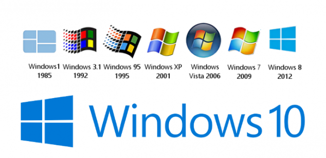

Evolución a través del tiempo - Windows

Iniciaremos el tema sobre todo lo relacionado a Microsoft Windows y su lucha junto con Mac Os.
Este sistema operativo se lanzó alrededor del 1985, donde con la ayuda de un núcleo basado en DOS logró tener el corazón de muchas personas. Cabe aclarar que eran pocas las personas en sus hogares que podrían permitirse en esta época adquirir con computador. Se podría decir que la revolución inició con Windows 95, el cual es una versión mucho más comercial y que junto con Windows 98 logró ser parte del desarrollo económico de la sociedad en general.
Lo que catapultó a Windows hacia la cima fue en un inicio la alianza que tuvo con los primeros OEM (Original equipment manufacturer) los cuales empezaron a ensamblar los equipos instalando Windows como primera opción. Esto generó que todas las personas iniciaran en el mundo de los sistemas con un ordenador Windows.
Sin embargo, Apple INC., nunca se quedó atras, siempre innovando creaba ordenadores completamente diferentes, esto llevo a que luego de algunos fracasos, Apple fuera conocida como una empresa exitosa a través del tiempo.